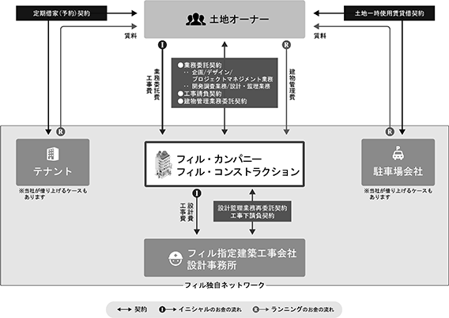
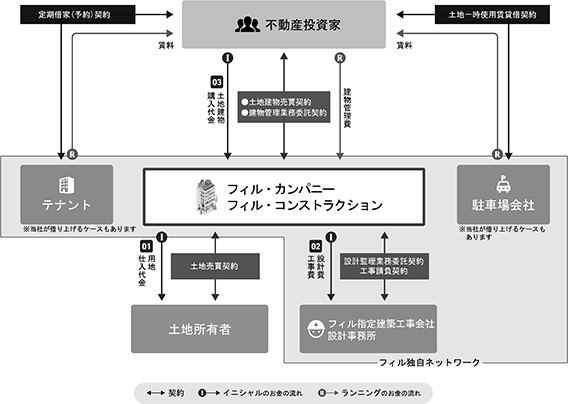
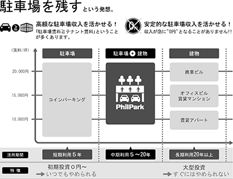
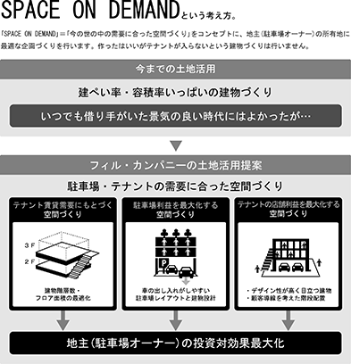

(注) １.「収益認識に関する会計基準」（企業会計基準第29号 2020年3月31日）等を第18期の期首から適用しており、第18期以降に係る主要な経営指標等については、当該会計基準等を適用した後の指標等となっております。
２．第18期及び第19期の潜在株式調整後１株当たり当期純利益については、希薄化効果を有している潜在株式が存在しないため記載しておりません。
(注) １．第16期及び第18期の１株当たり配当額及び配当性向については、配当を実施していないため、記載しておりません。
２．第15期の１株当たり配当額５円には、東証第一部上場記念配当５円を含んでおります。
３．第17期の１株当たり配当額10円には、コロナ禍におけるご支援に対する感謝配当10円を含んでおります。
４．最高株価及び最低株価は、2019年12月25日以前は東京証券取引所マザーズ市場、2019年12月26日以降は東京証券取引所市場第一部、2022年４月４日以降は東京証券取引所プライム市場、2023年10月20日以降は東京証券取引所スタンダード市場におけるものであります。
５. 「収益認識に関する会計基準」（企業会計基準第29号 2020年3月31日）等を第18期の期首から適用しており、第18期以降に係る主要な経営指標等については、当該会計基準等を適用した後の指標等となっております。
６．第18期及び第19期の潜在株式調整後１株当たり当期純利益については、希薄化効果を有している潜在株式が存在しないため記載しておりません。
提出会社は、2005年６月に設立され、土地オーナー・入居者・地域にとって三方良しとなる企画である「空中店舗フィル・パーク」及びガレージ付賃貸住宅「プレミアムガレージハウス」を事業展開しております。
設立以後の企業集団に係る経緯は、次のとおりであります。
当社グループは、当社、連結子会社である株式会社フィル・コンストラクション、株式会社プレミアムガレージハウス、株式会社フィルまちづくりファンディング、株式会社フィル事業承継・地域活性化プロジェクト及び株式会社ストラボ、関連会社である株式会社Trophy、株式会社玉栄、株式会社Hokkaido Food Innovators及び株式会社プクプク亭の計10社で構成されております。
当社グループは、「まちのスキマを「創造」で満たす」をパーパスとして掲げ、土地オーナー、入居者、地域にとって三方良しとなる企画である「空中店舗フィル・パーク」及びガレージ付賃貸住宅「プレミアムガレージハウス」等、空間ソリューション事業を展開しております。駐車場の上空や郊外の駅から離れた場所などの未活性空間に「空中店舗フィル・パーク」や「プレミアムガレージハウス」を企画・提供し、その場所の価値を最大化することで街の活性化を推進しております。
「空中店舗フィル・パーク」においては、その場所の需要に応じた空間づくり(SPACE ON DEMAND)をコンセプトとし、テナントの賃貸需要や事業メリットを最大限に引き出す企画・提案を始め、設計・施工等についても高い付加価値を持つサービスを駐車場等の土地オーナーに対しワンストップで提供しております。「プレミアムガレージハウス」においては、昨今のライフスタイルの多様化を背景にガレージ入居者のニーズも多岐にわたっている中で、その多様なニーズに応える空間を提供するとともに、当社独自の入居待ち登録システムを活用し入居者募集までワンストップで担うことで土地オーナーに対し安定的な土地活用を提供しております。
当社と連結子会社である株式会社フィル・コンストラクション(資本金20,000千円、2014年３月設立)は、共同で空中店舗フィル・パーク事業を行っており、その中で株式会社フィル・コンストラクションは、主に設計・施工業務を担っております。
連結子会社である株式会社プレミアムガレージハウス（資本金35,100千円、2019年１月子会社化）は、１階を車庫、趣味やSOHOの空間として利用可能なガレージ、２階を居住空間としたガレージ付賃貸住宅の企画・コンサルティング・入居者紹介業務を行っております。小型商業施設「空中店舗フィル・パーク」がコインパーキングの存在する商業エリアを主な企画対象としているのに対し、ガレージ付賃貸住宅「プレミアムガレージハウス」は駅から遠い土地や住宅街エリアを主な企画対象としております。
連結子会社である株式会社フィルまちづくりファンディング（資本金3,000千円、2021年６月子会社化）は、現在組成を目指している自社ファンドの組成後の運用・管理及びファンドを通じた不動産の取得や運用・管理業務を担います。
連結子会社である株式会社フィル事業承継・地域活性化プロジェクト（資本金50,000千円、2022年７月設立）は、事業承継に課題を持つ中小企業を支援し、空中店舗フィル・パークの拡大に資するテナント事業者の発掘及び育成を行うことを目的とし、2022年７月に設立しました。当社グループが持つノウハウや士業ネットワークを生かしながら、事業開発を担う専門会社等とも連携して企業の買収や資本提携、企業経営に関するコンサルティング業務を担います。
連結子会社である株式会社ストラボ（資本金20,000千円、2022年12月設立）は、空中店舗フィル・パークの直営テナントを運営することを目的とし、2022年12月に設立しました。この取り組みにより空中店舗フィル・パークに人の賑わいを生み出し直接街づくりに貢献するだけでなく、他のフロアのテナント誘致にもプラスの効果をもたらしております。
関連会社である株式会社Trophy(資本金90,000千円、2018年10月設立)は、いちご株式会社の連結子会社である株式会社セントロとの間で設立され、主に中規模の空中店舗フィル・パークの開発及び運用を担っております。
関連会社である株式会社玉栄（資本金10,000千円、2022年８月株式取得、鶏卵製品の製造、販売、卸事業）、株式会社Hokkaido Food Innovators（資本金3,000千円、2022年12月株式取得、飲食店を運営）及び株式会社プクプク亭（資本金1,500千円、2023年３月株式取得、飲食店を運営）は、連結子会社である株式会社フィル事業承継・地域活性化プロジェクトが出資を行っております。それぞれ空中店舗フィル・パークのテナント事業者候補と考え、出資しております。
当社グループでは、土地オーナー向けに土地活用方法の一形態として土地活用商品の企画提案をする「請負受注スキーム」と、不動産投資家向けに当社が土地を購入し土地活用商品の開発から販売までを行う「開発販売スキーム」の両スキームにより、「空中店舗フィル・パーク」等、空間ソリューション事業を行っております。
「請負受注スキーム」及び「開発販売スキーム」のスキーム図は、次のとおりであります。
〈請負受注スキーム図〉

〈開発販売スキーム図〉

当社グループの空中店舗フィル・パークは土地活用方法の一形態であり、土地オーナーの利益を最大化するために、事業メリットやテナントの賃貸需要を最大限に引き出す企画・提案を始め、設計・施工等についても高い付加価値を持つサービスをワンストップで提供している点に特徴があります。
企画・提案においては、スキーム全体を通じて“駐車場収益を最大限に残す”建築と連動しており、設計・施工以外でも、事業資金に関するコンサルティング、初期テナントの誘致から契約までのサポートやテナントとの内装工事に関する調整等まで一気通貫でのサービスを提供し、企画料を得るビジネスモデルとなっております。
設計・施工においては、建築基準・安全性基準をクリアした上で、柱の設置について工夫を行い、駐車場台数をいかに減少させないか、駐車場利用者の利便性・稼働率をいかに維持できるか等、費用対効果の最大化を図る建築ノウハウを構築しております。また、原則エレベーターを設置せず顧客導線を考えた階段の設置や、テナントの賃貸需要に合ったガラス張りのデザイン性の高い空間づくりなど、タイムパフォーマンスとコストパフォーマンス、クオリティーを追求したコンストラクションマネジメントにより独自の標準化された建築システムを構築しております。
〈空中店舗フィル・パークの価値〉


(注) １．有価証券届出書又は有価証券報告書を提出している会社はありません。
２．(株)フィル・コンストラクションについては、売上高(連結会社相互間の内部売上高を除く)の連結売上高に占める割合が10％を超えております。
主要な損益情報等 ① 売上高 2,669,079 千円
② 経常利益 63,985 〃
③ 当期純利益 42,041 〃
④ 純資産額 82,250 〃
⑤ 総資産額 941,492 〃
2023年11月30日現在
(注) １．従業員数は、就業人員数であります。
２．当社グループの事業セグメントは、「空中店舗フィル・パーク」等、空間ソリューション事業の単一セグメントのためセグメントごとの記載はしておりません。
2023年11月30日現在
(注) １．従業員数は、就業人員数であります。
２．平均年間給与は、賞与及び基準外賃金を含んでおります。なお、勤続１年未満の者（休職者を含む）は除いております。
３．当社の事業セグメントは、「空中店舗フィル・パーク」等、空間ソリューション事業の単一セグメントのためセグメントごとの記載はしておりません。
労働組合は結成されておりませんが、労使関係は円満に推移しております。